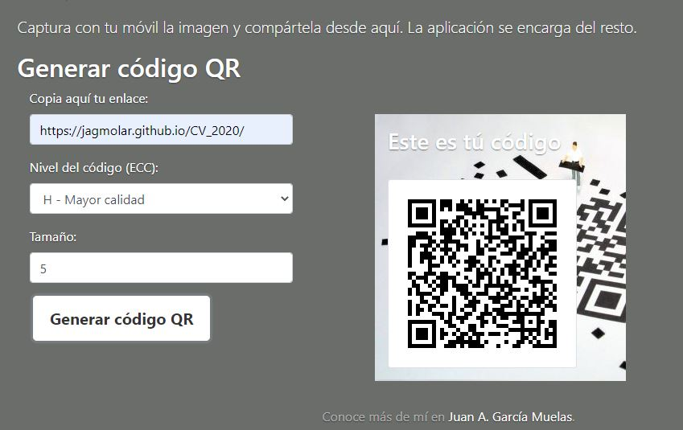

PRUEBAQR
Web de obtención de códigos Qr.
Versión Beta
Realizada como prueba base dentro de un proyecto colaborativo mayor para el desarrollo de código Qr adaptados para las cartas de los futuros clientes.
Por ello, es un proyecto bastante limpio visualmente, donde prima la gestión de la librería que controla la creación de los códigos, aunque se le añadiera ya el desarrollo del logo en el icono, o una vista para contactos.
Aún así, es completamente funcional como herramienta y mantiene un responsive design en la presentación.
Puedes probarla haciendo clic sobre el logo .